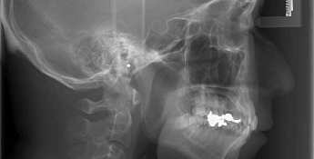

院内ツアー
インドアビューで、院内の様子を360度のパノラマでご確認いただけます。 写真上をクリック＆ドラッグで、動かしてご覧ください。
新患・急患随時受付
各種保険取扱
〒171-0032 東京都豊島区池袋1-11-1 高橋ビル1F ・JR山手線「池袋駅」 南出口より徒歩3分 ・東京メトロ副都心線「雑司が谷駅」 2番出口より徒歩10分
車いす対応 個室診療室
歯科用CT セファログラム
4代続く 厚い信頼を 池袋の皆様へ
news 新着情報
ただいま新着情報はございません。
高橋歯科医院池袋の
6つの特長

1
精確な診査・診断 歯科用CT・セファログラム完備
マイクロスコープを使い精密で確実な診断をします。 3D機能により立体的な画像で写し出されるため、 精確な情報が得られ、より安全な診断と治療が行えます。
詳しく見る▶︎お口周りのお悩みは、 当院におまかせください

一般歯科
小児歯科
予防歯科
歯周病
矯正歯科
審美歯科
ホワイトニング
義歯（入れ歯）
インプラント
歯科口腔外科
この度は、池袋にて開院することになりました、高橋と申します。
私は明治生まれの曽祖父から続く歯科医師の4代目であり、
歯科医師として日々研鑽に励むことが私の使命であると感じております。
小さいお子様からご高齢の方まで皆様のお口の健康をお守りして、地域に根ざし、 社会貢献をしたいと考えております。丁寧な説明と質の高い歯科医院を常に 心がけ、実践してまいります。お口や歯に関して気になることがございましたら、 どんな些細なお悩みでもお気軽にご相談下さい。
・2005年（平成17年）3月 神奈川歯科大学 歯科部 卒業
・神奈川歯科大学付属病院 臨床研修 修了
・東京都中央区、中野区の歯科医院に勤務
・2013年（平成25年）横浜市都筑区歯科医院 分院長就任
（同時期に神奈川歯科大学付属横浜クリニック インプラント科 専攻）
・2017年（平成29年）4月 開業
・床橋正研究会 会員
・インディアナ州立大学歯科部 インプラント科 フェロー
インドアビューで、院内の様子を360度のパノラマでご確認いただけます。 写真上をクリック＆ドラッグで、動かしてご覧ください。
診療カレンダー 2017年10月
| 日 | 月 | 火 | 水 | 木 | 金 | 土 |
|---|---|---|---|---|---|---|
|
1 休診日 |
2 | 3 | 4 | 5 | 6 | 7 |
|
8 休診日 |
9 休診日 |
10 | 11 | 12 | 13 | 14 |
|
15 休診日 |
16 | 17 | 18 | 19 | 20 | 21 |
|
22 休診日 |
23 | 24 | 25 | 26 | 27 | 28 |
|
29 休診日 |
30 | 31 |
高橋歯科医院池袋
所在地：〒171-0032 東京都豊島区池袋1-11-1
高橋ビル1F